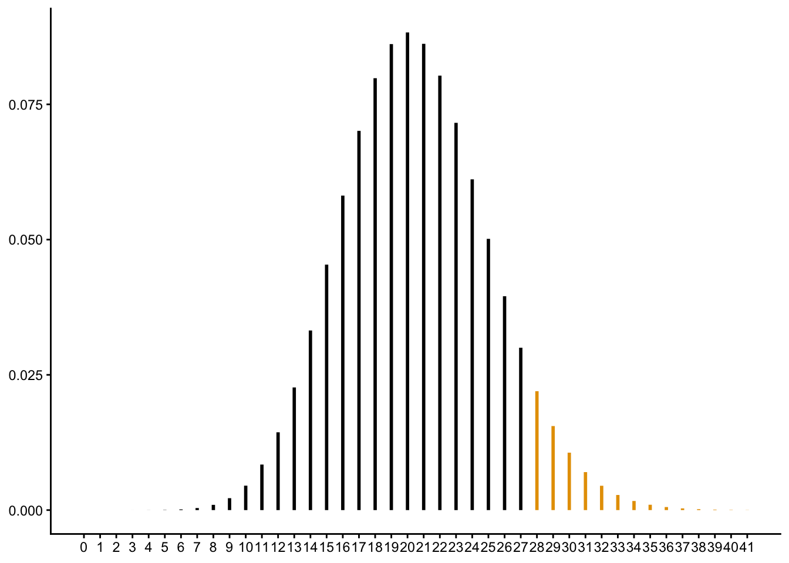
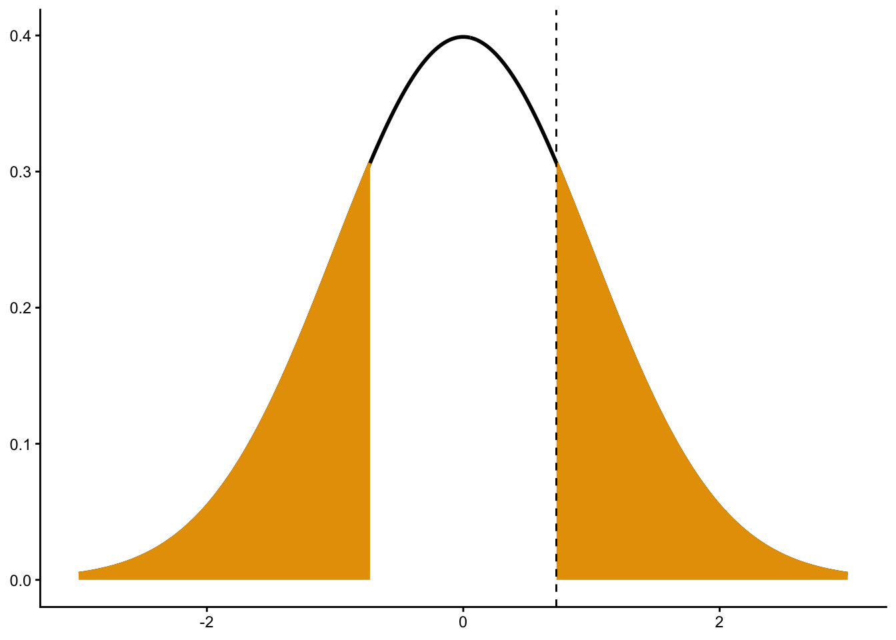
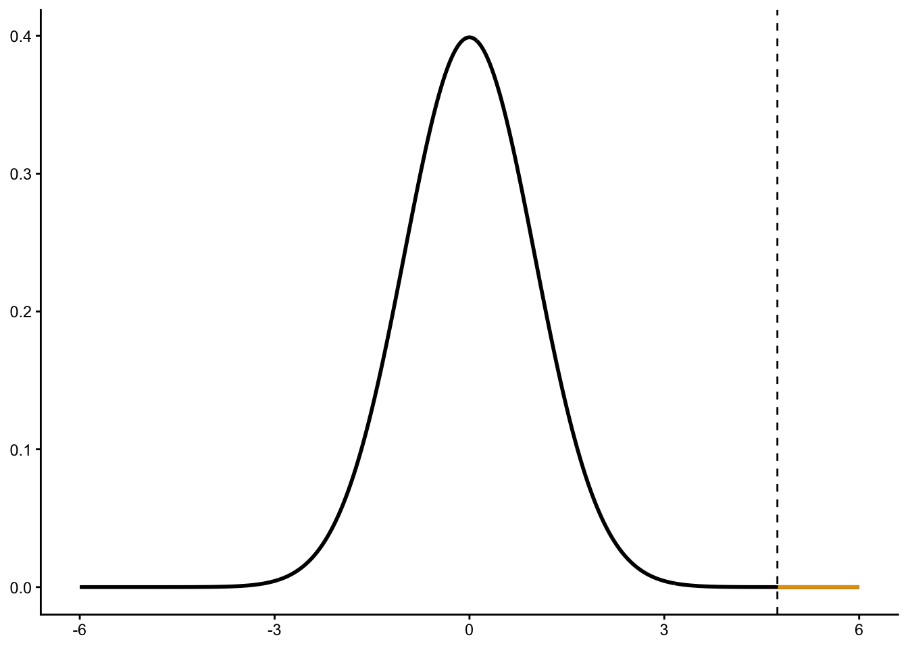
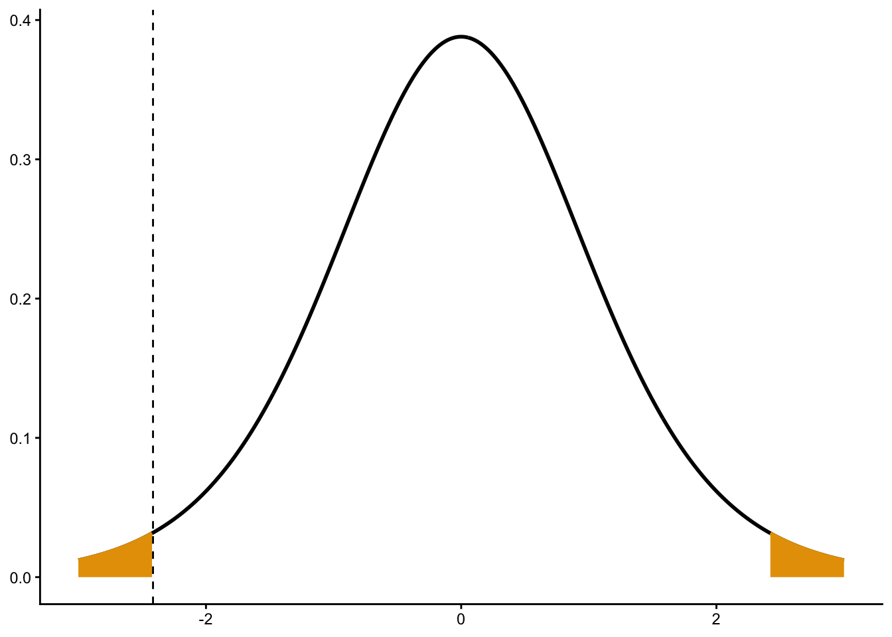
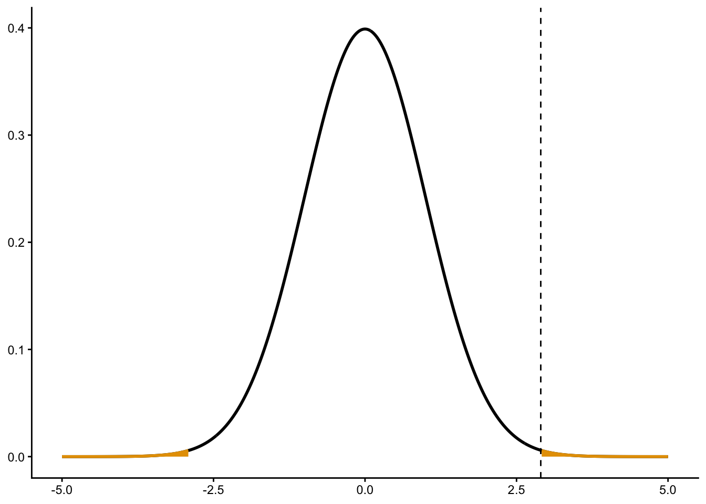
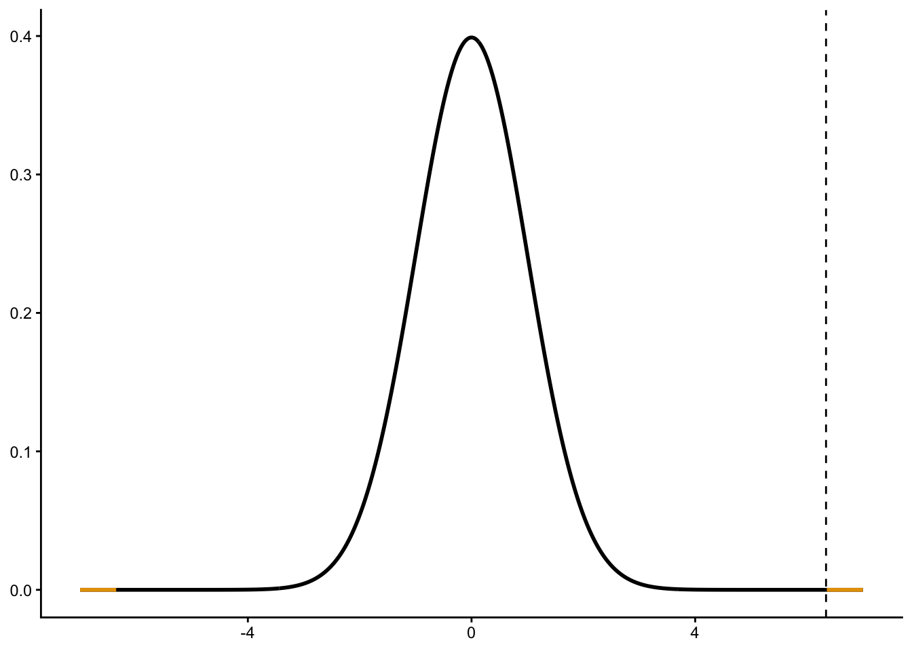

(13 - 15) / (4 / sqrt(10))[1] -1.581These practice problems mostly come from Rosner’s publicly available study sheet at the books companion website. The solutions are my own, since we differ slightly on what we are looking for in the solutions.
As part of a dietary-instruction program, ten 25–34-year-old males adopted a vegetarian diet for 1 month. While on the diet, the average daily intake of linoleic acid was 13 g with standard deviation = 4 g.
If the average daily intake among 25–34-year-old males in the general population is 15 g, then, using a significance level of .05, test the hypothesis that the intake of linoleic acid in this group is lower than that in the general population.
Let \(X_i\) be the average daily intake of linoleic acid of individual \(i\). We assume that \(X_i \sim N(\mu, \sigma^2)\). We are testing \(H_0: \mu = 15\) versus \(H_A: \mu < 15\). We are told that \(\bar{x} = 13\), \(s = 4\), and \(n = 10\). We first calculate the \(t\)-statistic \[ t = \frac{\bar{x} - \mu_0}{s/\sqrt{n}} = \frac{13 - 15}{4 / \sqrt{10}} \] Numerically
(13 - 15) / (4 / sqrt(10))[1] -1.581For the critical value method, we compare this to \(t_{n-1, \alpha}\) where \(\alpha = 0.05\)
qt(p = 0.05, df = 10 - 1)[1] -1.833Recall that since we are testing if the mean is lower than some value, evidence against the null is for very negative \(t\)-statistics. Since \(t > t_{n-1, \alpha}\) (-1.581 > -1.833), we fail to reject \(H_0\), and conclude that we do not have evidence that the average linoleic acid is lower than the general population.
Compute a p-value for the hypothesis test in Problem 7.1.
We could also calculate the \(p\)-value, \(P(T < -1.581)\) where \(T \sim t_{n-1}\)
Numerically
pt(q = -1.581, df = 9)[1] 0.07417Since the \(p\)-value is greater than 0.05, we again fail to reject at level 0.05 and conclude that we do not have evidence that the average linoleic acid is lower than the general population.
As part of the same program, eight 25–34-year-old females report an average daily intake of saturated fat of 11 g with standard deviation = 11 g while on a vegetarian diet.
If the average daily intake of saturated fat among 25–34-year-old females in the general population is 24 g, then, using a significance level of .01, test the hypothesis that the intake of saturated fat in this group is lower than that in the general population.
Let \(X_i\) be the average daily intake of saturated fat of individual \(i\). We assume that \(X_i \sim N(\mu, \sigma^2)\). We are testing \(H_0: \mu = 24\) versus \(H_A: \mu < 24\). We are told that \(\bar{x} = 11\), \(s = 11\), and \(n = 8\). We first calculate the \(t\)-statistic \[ t = \frac{\bar{x} - \mu_0}{s/\sqrt{n}} = \frac{11 - 24}{11 / \sqrt{8}} \] Numerically
(11 - 24) / (11 / sqrt(8))[1] -3.343For the critical value method, we compare this to \(t_{n-1, \alpha}\) where \(\alpha = 0.01\)
qt(p = 0.01, df = 8 - 1)[1] -2.998Recall that since we are testing if the mean is lower than some value, evidence against the null is for very negative \(t\)-statistics. Since \(t < t_{n-1, \alpha}\) (-3.343 < -2.998), we reject \(H_0\), and conclude that we have evidence that the average saturated fat intake is lower in this group.
Compute a p-value for the hypothesis test in Problem 7.3.
We could also calculate the \(p\)-value, \(P(T < -3.343)\) where \(T \sim t_{n-1}\)
Numerically
pt(q = -3.343, df = 7)[1] 0.006184Since the \(p\)-value is less than 0.01, we reject the null and conclude that the average saturated fat intake for this group is lower than the general population.
What is the relationship between your answers to Problems 7.3 and 7.4?
Then \(t\) is less than \(t_{n-1, \alpha}\) (critical value method) if and only if \(P(T < t) < \alpha\) (\(p\)-value method).
Suppose we are uncertain what effect a vegetarian diet will have on the level of linoleic-acid intake in Problem 7.1.
What are the null and alternative hypotheses in this case?
Using the same notation as in 7.1, we are testing
Compare the mean level of linoleic acid in the vegetarian population with that of the general population under the hypotheses in Problem 7.6. Report a \(p\)-value.
We use the same \(t\)-statistic as before \[ t = \frac{\bar{x} - \mu_0}{s/\sqrt{n}} = \frac{13 - 15}{4 / \sqrt{10}} = -1.581 \] But now “more extreme” means just further away from 0. For the critical value method, we compare our observed \(t\)-statistic to \(t_{n-1, 1 - \alpha/2}\)
qt(p = 1 - 0.05 / 2, df = 10 - 1)[1] 2.262Since \(|t| < t_{n-1,1 - \alpha/2}\) (1.581 < 2.262), we again fail to reject \(H_0\) at significance level 0.05. More commonly, we would calculate a \(p\)-value as \(P(|T| > 1.581)\)
In R
2 * pt(q = -1.581, df = 10 - 1)[1] 0.1483Since the \(p\)-value is 0.1483, we fail to reject \(H_0\) at significance level 0.05 and conclude that we do not have evidence that mean linoleic acid is different in this group than in the general population.
Suppose we are uncertain what effect a vegetarian diet will have on saturated fat intake. Compute a two-sided p-value for the hypothesis testing situation mentioned in Problem 7.3.
We use the same \(t\)-statistic as before \[ t = \frac{\bar{x} - \mu_0}{s/\sqrt{n}} = \frac{11 - 24}{11 / \sqrt{8}} = -3.343 \] But now “more extreme” means just further away from 0. For the critical value method, we compare our observed \(t\)-statistic to \(t_{n-1, 1 - \alpha/2}\)
qt(p = 1 - 0.01 / 2, df = 8 - 1)[1] 3.499Since \(|t| < t_{n-1,1 - \alpha/2}\) (3.343 < 3.499), this time we fail to reject \(H_0\) at significance level 0.01. More commonly, we would calculate a \(p\)-value as \(P(|T| > 3.343)\)

In R
2 * pt(q = -3.343, df = 8 - 1)[1] 0.01237Since the \(p\)-value is 0.01237 (larger than 0.01), we fail to reject \(H_0\) at significance level 0.01 and conclude that we do not have evidence that mean saturated fat is different in this group than in the general population.
Compute a lower one-sided 95% CI for the true mean intake of linoleic acid in the vegetarian population depicted in Problem 7.1.
We need an upper bound of the form \[ \bar{x} + t_{n-1, 1-\alpha}\frac{s}{\sqrt{n}} \] We were given all terms except \(t_{n-1,1-\alpha}\), where \(\alpha = 0.05\)
qt(p = 1 - 0.05, df = 10 - 1)[1] 1.833Plugging in values, we get \[ 13 + 1.833 \times 4 / \sqrt{10} \] Numerically
13 + 1.833 * 4 / sqrt(10)[1] 15.32So the one-sided 95% CI is \[ \mu \leq 15.32 \]
How does your answer to Problem 7.11 relate to your answer to Problem 7.1?
Since the 95% CI include 15 (from 7.11), we would fail to reject at level 0.05 for \(H_0: \mu = 15\) versus \(H_A: \mu < 15\) (from 7.1).
Suppose that 28 cancer deaths are noted among workers exposed to asbestos in a building-materials plant from 1981–1985. Only 20.5 cancer deaths are expected from statewide cancer-mortality rates.
What is the estimated SMR for total cancer mortality?
SMR is \[ \frac{\text{observed}}{\text{expected}}\times 100\% = \frac{28}{20.5}\times 100\% \]
28 / 20.5 * 100[1] 136.6So 136.6%.
Is there a significant excess or deficit of total cancer deaths among these workers?
We use the poisson test. Let \(X\) be the number of cancer deaths. Then we assume \(X \sim \mathrm{Pois}(\mu)\). We are testing \(H_0: \mu = 20.5\) versus \(H_A: \mu > 20.5\). The \(p\)-value of the exact test is just \(P(X \geq 28)\) assuming \(X \sim \mathrm{Pois}(20.5)\), since that would be the probability of seeing values as or more extreme than what we saw:

1 - ppois(q = 27, lambda = 20.5)[1] 0.06632You can also get this with poisson.test()
poisson.test(x = 28, alternative = "greater", r = 20.5) |>
tidy() |>
select(p.value)# A tibble: 1 × 1
p.value
<dbl>
1 0.0663The \(p\)-value is somewhat small. So we perhaps have some weak evidence of larger cancer rates. But the evidence is very weak.
In the same group of workers, 7 deaths due to leukemia are noted. Only 4.5 are expected from statewide rates.
What is the estimated SMR for leukemia?
SMR is \[ \frac{\text{observed}}{\text{expected}}\times 100\% = \frac{7}{4.5}\times 100\% \]
7 / 4.5 * 100[1] 155.6So 155.6%.
Is there a significant excess or deficit of leukemia deaths among these workers?
Let \(Y\) be the number of leukemia deaths. Then we assume \(Y \sim \mathrm{Pois}(\mu)\). We are testing \(H_0: \mu = 4.5\) versus \(H_A: \mu \neq 4.5\). We do an exact Poisson test here, summing over all probabilities less (or as) likely than the observed value of 7.
This is done via poisson.test()
poisson.test(x = 7, r = 4.5) |>
tidy() |>
select(p.value)# A tibble: 1 × 1
p.value
<dbl>
1 0.230Since the \(p\)-value is pretty large, we do not have evidence that the leukemia rates differ in this group.
Not for the exam, but for your own edification. The below shows that R’s default way is what we discussed:
x <- dpois(x = 0:20, lambda = 4.5)
sum(x[x <= x[[8]]])[1] 0.23Rosner does 2 times the larger one-tailed \(p\)-value:
2 * (1 - ppois(q = 6, lambda = 4.5))[1] 0.3379So if you read his solution, the \(p\)-value will differ.
Suppose the annual incidence of diarrhea (defined as 1+ episodes per year) in a Third-World country is 5% in children under the age of 2.
If 10 children out of 108 under the age of 2 in a poor rural community in the country have 1+ episodes of diarrhea in a year, then test if this represents a significant departure from the overall rate for the country using the critical-value method.
Let \(X\) be the number with 1+ episodes in a year. Then \(X \sim \mathrm{Binom}(108, p)\). We are told that \(\hat{p} = 10 / 108 = 0.09259\). We are testing \(H_0: p = 0.05\) versus \(H_A: p \neq 0.05\). We can use the normal method since \(np(1-p)\geq 5\)
108 * 0.05 * (1 - 0.05)[1] 5.13We calculate the \(z\)-statistic \[ z = \frac{\hat{p} - p_0}{\sqrt{p_0(1-p_0)/n}} = \frac{0.09259 - 0.05}{\sqrt{0.05(1-0.05)/108}} \] Numerically, the \(z\)-value is
(0.09259 - 0.05) / sqrt(0.05 * (1 - 0.05) / 108)[1] 2.031Though, it is better to use a continuity correction \[ z = \frac{|\hat{p} - p_0| - 1/(2n)}{\sqrt{p_0(1-p_0)/n}} = \frac{|0.09259 - 0.05| - 1/216}{\sqrt{0.05(1-0.05)/108}} \] Numerically,
(abs(0.09259 - 0.05) - 1/216) / sqrt(0.05 * (1 - 0.05) / 108)[1] 1.81For the critical-value method, we compare this \(z\)-statistic to \(z_{1 - \alpha/2}\). Let \(\alpha = 0.05\)
qnorm(1 - 0.05 / 2)[1] 1.96Since \(|z| < z_{1-\alpha}\) (1.81 < 1.96), we fail to reject \(H_0\) and conclude that we do not have evidence that diarrhea rate differs from the country as a whole.
Report a p-value corresponding to your answer to Problem 7.21
We could alternatively calculate \(P(Z > |z|)\) given \(Z \sim N(0,1)\).
Numerically, the \(p\)-value is
2 * pnorm(q = -1.81)[1] 0.0703Since this is greater than 0.05, we again fail to reject at significance level 0.05 and conclude that we do not have evidence that the diarrhea rate differs than the country as a whole.
You can also use prop.test() to do this
prop.test(x = 10, n = 108, p = 0.05) |>
tidy() |>
select(p.value)# A tibble: 1 × 1
p.value
<dbl>
1 0.0703Note that the \(p\)-value is still somewhat small. So we might say we have weak evidence.
Suppose the distribution of systolic blood pressure in the general population is normal with a mean of 130 mm Hg and a standard deviation of 20 mm Hg. In a special subgroup of 85 people with glaucoma, we find that the mean systolic blood pressure is 135 mm Hg with a standard deviation of 22 mm Hg.
Assuming that the standard deviation of the glaucoma patients is the same as that of the general population, test for an association between glaucoma and high blood pressure.
Let \(X_i\) be the systolic blood pressure for glaucoma patient \(i\). Then we assume \(X \sim N(\mu, \sigma^2)\). We want to test \(H_0:\mu = 130\) versus \(H_A: \mu \neq 130\). We are told that \(\bar{x} = 135\) and \(n = 85\). We are further told to assume that we know \(\sigma = 20\). We calculate a \(z\)-statistic \[ z = \frac{\bar{x} - \mu_0}{\sigma/\sqrt{n}} = \frac{135 - 130}{20 / \sqrt{85}} \] Numerically
(135 - 130) / (20 / sqrt(85))[1] 2.305We compare this to a \(N(0,1)\) distribution
2 * pnorm(-2.305)[1] 0.02117So we have some evidence that the systolic blood pressure differs in the glaucoma group than the general population.
Answer Problem 7.23 without making the assumption concerning the standard deviation.
We are in the same set up as in 7.23, except we are told that \(s = 22\) and we cannot assume that we know \(\sigma\). We calculate a \(t\)-statistic \[ t = \frac{\bar{x} - \mu_0}{s/\sqrt{n}} = \frac{135 - 130}{22 / \sqrt{85}} \] Numerically
(135 - 130) / (22 / sqrt(85))[1] 2.095We compare this to a \(t_{84}\) distribution
2 * pt(q = -2.095, df = 84)[1] 0.03918Again, we have evidence that the glaucoma group has a different SBP than the population as a whole.
Suppose it is known that the average life expectancy of a 50-year-old man in 1945 was 18.5 years. Twenty men aged 50 who have been working for at least 20 years in a potentially hazardous industry were ascertained in 1945. On follow-up in 1985 all the men have died, with an average lifetime of 16.2 years and a standard deviation of 7.3 years since 1945. Assuming that life expectancy of 50-year-old men is approximately normally distributed, test if the underlying life expectancy for workers in this industry is shorter than for comparably aged men in the general population.
Let \(X_i\) be the lifetime of worker \(i\). Then we assume that \(X_i \sim N(\mu, \sigma^2)\). We are testing \(H_0: \mu = 18.5\) versus \(H_A: \mu < 18.5\). We are told that \(\bar{x} = 16.2\), \(s = 7.3\), and \(n = 20\). We calculate a \(t\)-statistic \[ t = \frac{\bar{x} - \mu_0}{s/\sqrt{n}} = \frac{16.2 - 18.5}{7.3 / \sqrt{20}} \] Numerically
(16.2 - 18.5) / (7.3 / sqrt(20))[1] -1.409We compare this to a \(t_{19}\) distribution
pt(q = -1.409, df = 19)[1] 0.0875The \(p\)-value is pretty large, so we have at best weak evidence that the average lifetime is less than the general population.
An area of current interest in cancer epidemiology is the possible role of oral contraceptives (OC’s) in the development of breast cancer. Suppose that in a group of 1000 premenopausal women ages 40–49 who are current users of OC’s, 15 subsequently develop breast cancer over the next 5 years. If the expected 5-year incidence rate of breast cancer in this group is 1.2% based on national incidence rates, then test the hypothesis that there is an association between current OC use and the subsequent development of breast cancer.
Let \(X\) be the number with breast cancer after 5 years. Then \(X \sim \mathrm{Binom}(1000, p)\). We want to test \(H_0: p = 0.012\) versus \(H_A: p \neq 0.012\). We are told that \(x = 15\) was observed, so \(\hat{p} = 15/1000 = 0.015\). We can use a normal approximation since \(np_0(1-p_0) > 5\)
1000 * 0.012 * (1 - 0.012)[1] 11.86We calculate a \(z\)-statistic \[ z = \frac{\hat{p} - p_0}{\sqrt{p_0(1-p_0)/n}} = \frac{0.015 - 0.012}{\sqrt{0.012(1-0.012)/1000}} \] Numerically
(0.015 - 0.012) / sqrt(0.012 * (1 - 0.012) / 1000)[1] 0.8713Though, it is better to use a continuity correction \[ z = \frac{|\hat{p} - p_0| - 1/(2n)}{\sqrt{p_0(1-p_0)/n}} = \frac{|0.015 - 0.012| - 1/2000}{\sqrt{0.012(1-0.012)/1000}} \] Numerically,
(abs(0.015 - 0.012) - 1/2000) / sqrt(0.012 * (1 - 0.012) / 1000)[1] 0.7261We compare this to a \(N(0,1)\) distribution

2 * pnorm(-0.7261)[1] 0.4678Since the \(p\)-value is so large, we have no evidence that these women have a different breast cancer rate than the general population.
In R, we would use prop.test()
prop.test(x = 15, n = 1000, p = 0.012) |>
tidy() |>
select(p.value)# A tibble: 1 × 1
p.value
<dbl>
1 0.468A group of investigators wishes to explore the relationship between the use of hair dyes and the development of breast cancer in females. A group of 1000 beauticians 30–39 years of age is identified and followed for 5 years. After 5 years, 20 new cases of breast cancer have occurred. Assume that breast-cancer incidence over this time period for an average woman in this age group is 7/1000. We wish to test the hypothesis that using hair dyes increases the risk of breast cancer.
Is a one-sided or two-sided test appropriate here?
One-sided. We are interested in one direction (hair dies increase the risk).
Let \(X\) be the number of breast cancer cases. Then \(X \sim \mathrm{Binom}(1000, p)\). We are testing \(H_0: p = 7/1000\) versus \(H_A: p > 7/1000\).
Test the hypothesis.
Since \(np_0(1-p_0) \geq 5\), we can use the normal approximation.
1000 * 0.007 * (1 - 0.007)[1] 6.951With \(\hat{p} = 20 / 1000\), we calculate a \(z\)-statistic \[ z = \frac{\hat{p} - p_0}{\sqrt{p_0(1-p_0)/n}} = \frac{0.02 - 0.007}{\sqrt{0.007(1-0.007)/1000}} \] Numerically
(0.02 - 0.007) / sqrt(0.007 * (1 - 0.007) / 1000)[1] 4.931Though, it is better to use a continuity correction \[ z = \frac{\hat{p} - p_0 - 1/(2n)}{\sqrt{p_0(1-p_0)/n}} = \frac{0.02 - 0.007 - 1/2000}{\sqrt{0.007(1-0.007)/1000}} \] Numerically
(0.02 - 0.007 - 1/2000) / sqrt(0.007 * (1 - 0.007) / 1000)[1] 4.741We compare this to a \(N(0,1)\) distribution

1 - pnorm(4.741)[1] 1.063e-06Since the \(p\)-value is so small, we have strong evidence that these women have a higher breast cancer rate than the general population.
In R, we would use prop.test()
prop.test(x = 20, n = 1000, p = 0.007, alternative = "greater") |>
tidy() |>
select(p.value)# A tibble: 1 × 1
p.value
<dbl>
1 0.00000106The level of serum creatinine in the blood is considered a good indicator of the presence or absence of kidney disease. Normal people generally have low concentrations of serum creatinine, whereas diseased people have high concentrations. Suppose we want to look at the relation between analgesic abuse and kidney disorder. In particular, suppose we look at 15 people working in a factory who are known to be “analgesic abusers” (i.e., they take more than 10 pills per day) and we measure their creatinine levels. The creatinine levels are
cret <- tibble(
creatine = c(0.9, 1.1, 1.6, 2.0, 0.8,
0.7, 1.4, 1.2, 1.5, 0.8,
1.0, 1.1, 1.4, 2.2, 1.4)
)
cret# A tibble: 15 × 1
creatine
<dbl>
1 0.9
2 1.1
3 1.6
4 2
5 0.8
6 0.7
7 1.4
8 1.2
9 1.5
10 0.8
11 1
12 1.1
13 1.4
14 2.2
15 1.4If we assume that creatinine levels for normal people are normally distributed with mean 1.0, then can we make any comment about the levels for analgesic abusers via some statistical test?
Let \(X_i\) be the creatine level for analgesic abuser \(i\). Then we assume that \(X_i \sim N(\mu, \sigma^2)\). We want to test \(H_0: \mu = 1\) versus \(H_A: \mu \neq 1\). We calculate summary statistics
cret |>
summarize(
mean = mean(creatine),
sd = sd(creatine),
n = n())# A tibble: 1 × 3
mean sd n
<dbl> <dbl> <int>
1 1.27 0.435 15We calculate a \(t\)-statistic \[ t = \frac{\bar{x} - \mu_0}{s/\sqrt{n}} = \frac{1.273 - 1}{0.435 / \sqrt{15}} \] Numerically
(1.273 - 1) / (0.435 / sqrt(15))[1] 2.431We compare this to a \(t_{14}\) distribution
plt_t(lb = 2.431, two_sided = TRUE, df = 14) +
geom_vline(xintercept = 2.431, lty = 2)
2 * pt(-2.431, df = 14)[1] 0.02909Since the \(p\)-value is so small, we have evidence that the mean creatine levels of the analgesic abusers is different than normal folks.
The real-way in R uses t.test()
t.test(creatine ~ 1, data = cret, mu = 1) |>
tidy() |>
select(p.value)# A tibble: 1 × 1
p.value
<dbl>
1 0.0289The difference is caused by rounding error when calculating the \(t\)-statistic.
Height and weight are often used in epidemiological studies as possible predictors of disease outcomes. If the people in the study are assessed in a clinic, then heights and weights are usually measured directly. However, if the people are interviewed at home or by mail, then a person’s self-reported height and weight are often used instead. Suppose we conduct a study on 10 people to test the comparability of these two methods. The data for weight are given in the following data frame.
wt <- tibble(
Subject_number = 1:10,
Self_reported_weight = c(120, 120, 135, 118, 120, 190, 124, 175, 133, 125),
Measured_weight = c(125, 118, 139, 120, 125, 198, 128, 176, 131, 125),
Difference = c(-5, 2, -4, -2, -5, -8, -4, -1, 2, 0)
)
wt# A tibble: 10 × 4
Subject_number Self_reported_weight Measured_weight Difference
<int> <dbl> <dbl> <dbl>
1 1 120 125 -5
2 2 120 118 2
3 3 135 139 -4
4 4 118 120 -2
5 5 120 125 -5
6 6 190 198 -8
7 7 124 128 -4
8 8 175 176 -1
9 9 133 131 2
10 10 125 125 0Should a one-sided or two-sided test be used here?
Two-sided. We are just interested in if self-reported is comparable to measured.
Which test procedure should be used to test the preceding hypothesis?
A one-sample two-sided \(t\)-test on the differences.
Let \(X_i\) be the difference in self-reported and measured weight on subject \(i\). Then we assume \(X_i \sim N(\mu,\sigma^2)\). We want to test \(H_0: \mu = 0\) versus \(H_A: \mu \neq 0\).
Conduct the test in Problem 7.34 using the critical-value method with α = .05.
We calculate summary statistics
wt |>
summarize(mean = mean(Difference), sd = sd(Difference), n = n())# A tibble: 1 × 3
mean sd n
<dbl> <dbl> <int>
1 -2.5 3.27 10We calculate a \(t\)-statistic \[ t = \frac{\bar{x} - \mu_0}{s/\sqrt{n}} = \frac{-2.5 - 0}{3.274 / \sqrt{10}} \] Numerically
-2.5 / (3.274 / sqrt(10))[1] -2.415We compare this to \(t_{n-1,1 - \alpha/2}\) with \(\alpha = 0.05\)
qt(p = 1 - 0.05 / 2, df = 10 - 1)[1] 2.262Since \(|t| > t_{n-1,1-\alpha/2}\) (2.415 > 2.262), reject the null at significance level 0.05 and conclude that we have evidence that the mean self-reported weights differ from the mean measured weights.
Compute the p-value for the test in Problem 7.34.
We compare this \(t\)-statistic to a \(t_{9}\) distribution
plt_t(ub = -2.415, two_sided = TRUE, df = 9) +
geom_vline(xintercept = -2.415, lty = 2)
2 * pt(-2.415, df = 14)[1] 0.02999Since the \(p\)-value is less than 0.05, we reject at significance level 0.05 and conclude that we have evidence that the mean self-reported weights differ from the mean measured weights.
Is there evidence of digit preference among the self-reported weights? Specifically, compare the observed proportion of self-reported weights whose last digit is 0 or 5 with the expected proportion based on chance and report a p-value.
The expected proportion based on chance is 2/10 = 0.2 (each digit is equally likely). Let \(X\) be the number of individuals with a last digit of either 2 or 0. Then \(X \sim \mathrm{Binom}(10, p)\). We want to test \(H_0: p = 0.2\) versus \(H_0: p > 0.2\). I am using a one-sided test since we suspect 0’s and 5’s are more likely. We observe \(x = 7\) individuals with either a 0 or a 5 as a last digit. We cannot use the normal approximation because \(np_0(1-p_0) < 5\)
10 * 0.2 * (1 - 0.2)[1] 1.6The exact \(p\)-value is the \(P(X \geq 7)\) given \(X \sim \mathrm{Binom}(10, 0.2)\). You cannot even see the mass on the PMF below, so the \(p\)-value is going to be tiny:
plt_binom(size = 10, prob = 0.2, lb = 7)We can calculate this by
1 - pbinom(q = 6, size = 10, prob = 0.2)[1] 0.0008644Alternative, we can use binom.test()
binom.test(x = 7, n = 10, p = 0.2, alternative = "greater") |>
tidy() |>
select(p.value)# A tibble: 1 × 1
p.value
<dbl>
1 0.000864We thus have very strong evidence that there are more 0’s and 5’s as last digits than would happen by chance.
Several studies have been performed relating urinary potassium excretion to blood-pressure level. These studies have tended to show an inverse relationship between these two variables, with the higher the level of potassium excretion, the lower the BP level. Therefore, a treatment trial is planned to look at the effect of potassium intake in the form of supplement capsules on changes in DBP level. Suppose that in a pilot study, 20 people are given potassium supplements for 1 month. The data are as follows:
| Metric | Value |
|---|---|
| Mean change (1 month-baseline) | -3.2 |
| sd change | 8.5 |
| n | 20.0 |
What test should be used to assess if potassium supplements have any effect on DBP level?
A one-sample \(t\)-test. Let \(X_i\) be the change in DBP level for individual \(i\). Then we assume that \(X_i \sim N(\mu, \sigma^2)\). We want to test \(H_0: \mu = 0\) versus \(H_A: \mu \neq 0\). Note that if \(\mu > 0\) then the DBP is higher after 1 month, and if \(\mu < 0\) then the DBP is lower after 1 month.
Perform the test in Problem 7.38 using a two-sided test and report the p-value.
We are told that \(\bar{x} = -3.2\), \(s = 8.5\), and \(n = 20\). We calculate a \(t\)-statistic \[ t = \frac{\bar{x} - \mu_0}{s/\sqrt{n}} = \frac{-3.2 - 0}{8.5 / \sqrt{20}} \] Numerically
-3.2 / (8.5 / sqrt(20))[1] -1.684We compare this to a \(t_{19}\) distribution
2 * pt(q = -1.684, df = 19)[1] 0.1085The \(p\)-value is pretty large, so we do not have evidence that the mean difference is different from 0 after one month.
Derive a 95% CI for the true mean change based on the preceding data. What is the relationship of your results here and in Problem 7.39?
This is \[ \bar{x} \pm t_{n-1, 1-\alpha/2}\frac{s}{\sqrt{n}} \] Where \(t_{n-1, 1-\alpha/2}\) with \(\alpha = 0.05\) and \(n = 20\) is
qt(1 - 0.05 / 2, df = 19)[1] 2.093Plugging in values \[ -3.2 \pm 2.093 \times \frac{8.5}{\sqrt{20}} \] Numerically
-3.2 - 2.093 * 8.5 / sqrt(20)[1] -7.178-3.2 + 2.093 * 8.5 / sqrt(20)[1] 0.7781In 7.39, the \(p\)-value (against the null of \(H_0: \mu = 0\)) was greater than 0.05. This shows up here because 0 is within the 95% confidence interval
How many subjects need to be studied to have an 80% chance of detecting a significant treatment effect using a two-sided test with an α level of .05 if the mean and sd of the pilot study are assumed to be the population mean and sd?
We need a sample size of 58 individuals.
power.t.test(
delta = 3.2,
sd = 8.5,
sig.level = 0.05,
power = 0.8,
type = "one.sample")
One-sample t test power calculation
n = 57.33
delta = 3.2
sd = 8.5
sig.level = 0.05
power = 0.8
alternative = two.sidedA study was conducted to identify characteristics that would predict 1-year survival for patients admitted to the medical service at New York Hospital. One factor that was considered was the physician’s estimate of the patients’ severity of illness at the time of admission. Suppose that it is expected, based on previous studies in this hospital, that 2/3 of admitted patients will survive for at least 1 year.
If 47% of 136 patients deemed severely ill survive at least 1 year, then what test can be used to test the hypothesis that the severity-of-illness rating is predictive of 1-year mortality?
Let \(X\) be the number of severely ill patients that die. Then \(X \sim \mathrm{Binom}(n, p)\). We want to test \(H_0: p = 2/3\) versus \(H_A: p \neq 2/3\). This is a one-samnple binomial test.
Perform the test in Problem 7.42 using the critical-value method based on an α level of .05.
We can use a normal approximation since \(np_0(1-p_0) \geq 5\)
136 * 2/3 * (1 - 2/3)[1] 30.22With \(\hat{p} = 0.47\), we calculate a \(z\)-statistic \[ z = \frac{\hat{p} - p_0}{\sqrt{p_0(1-p_0)/n}} = \frac{0.47 - \frac{2}{3}}{\sqrt{\frac{2}{3}(1-\frac{2}{3})/136}} \] Numerically
(0.47 - 2/3) / sqrt(2/3 * (1 - 2/3) / 136)[1] -4.865We compare this to a \(N(0,1)\) distribution. The critical value method would compare this \(z\)-statistic to \(z_{1-\alpha/2}\)
qnorm(1 - 0.05 / 2)[1] 1.96Since \(|z|>z_{1-\alpha/2}\) (4.865 > 1.96), we have evidence at the 0.05 significance level that patients deemed “severely ill” have a different survival probability than the general hospital population.
Provide a 95% CI for the 1-year survival rate among severely ill patients.
We calculate \[ \hat{p} \pm z_{1 - \alpha/2} \cdot \sqrt{ \frac{ \hat{p}(1 - \hat{p}) }{n} } \] We can get \(z_{1-\alpha/2}\) where \(\alpha = 0.05\) via
qnorm(1 - 0.05/2)[1] 1.96Plugging in, we get \[ 0.47 \pm 1.96 \cdot \sqrt{ \frac{ 0.47(1 - 0.47) }{136} } \] Numerically, this is
0.47 - 1.96 * sqrt(0.47 * (1 - 0.47) / 136)[1] 0.38610.47 + 1.96 * sqrt(0.47 * (1 - 0.47) / 136)[1] 0.5539Suppose that it is expected, based on previous studies, that among all patients who survive hospitalization, 75% will survive for 1 year. Furthermore, of the 136 severely ill patients, 33 die during hospitalization, and an additional 39 die during the 1st year, but after hospitalization.
Test the hypothesis that severity of illness is predictive of 1-year mortality among patients who are discharged from the hospital. Report a p-value.
Let \(X\) be the number of severely ill patients that survived hospitalization that also survived during the first year. Then \(X \sim \mathrm{Binom}(136 - 33, p) = \mathrm{Binom}(103, p)\). We want to test \(H_0: p = 0.75\) versus \(H_A: p \neq 0.75\). We are told that \(x = 103 - 39 = 64\), so \(\hat{p} = 64 / 103 = 0.6214\). We can use a normal approximation since \(np_0(1-p_0) > 5\)
103 * 0.75 * (1 - 0.75)[1] 19.31We calculate a \(z\)-statistic \[ z = \frac{\hat{p} - p_0}{\sqrt{p_0(1-p_0)/n}} = \frac{0.6214 - 0.75}{\sqrt{0.75(1-0.75)/103}} \] Numerically
(0.6214 - 0.75) / sqrt(0.75 * (1 - 0.75) / 103)[1] -3.014Though, it is better to use a continuity correction \[ z = \frac{|\hat{p} - p_0| - 1/(2n)}{\sqrt{p_0(1-p_0)/n}} = \frac{|0.6214 - 0.75| - 1/206}{\sqrt{0.75(1-0.75)/103}} \] Numerically
(abs(0.6214 - 0.75) - 1/206) / sqrt(0.75 * (1 - 0.75) / 103)[1] 2.9We compare this to a \(N(0,1)\) distribution

2 * pnorm(-2.9)[1] 0.003732Since the \(p\)-value is so small, we have strong evidence that severly ill patients have a different 1-year survival rate post-hospital.
In R, we would use prop.test()
prop.test(x = 64, n = 103, p = 0.75) |>
tidy() |>
select(p.value)# A tibble: 1 × 1
p.value
<dbl>
1 0.00372Radiotherapy is a common treatment for breast cancer, with about 25% of women receiving this form of treatment. Assume that the figure 25% is based on a very large sample and is known without error. One hypothesis is that radiotherapy applied to the contralateral breast may be a risk factor for development of breast cancer in the opposite breast 5 or more years after the initial cancer. Suppose that 655 women are identified who developed breast cancer in the opposite breast 5 or more years after the initial cancer.
If 206 of the women received radiotherapy after their initial diagnosis, then test the hypothesis that radiotherapy is associated with the development of breast cancer in the opposite breast. Please report a p-value.
Let \(X\) be the number who received radiotherapy after their initial diagnosis among the 655 women. Then \(X \sim \mathrm{Binom}(655, p)\). Since 25% of breast cancer patients get radio therapy, we would expect about a quarter of these 655 women to have done so. If we see more than a quarter, this might indicate that radiotherapy women are overrepresented in cases. We want to test if \(H_0: p = 0.25\) versus \(H_A: p \neq 0.25\). We are told that \(x = 206\), or \(\hat{p} = 206 / 655 = 0.3145\). We can use a normal approximation since \(np_0(1-p_0) > 5\)
655 * 0.25 * (1 - 0.25)[1] 122.8We calculate a \(z\)-statistic \[ z = \frac{\hat{p} - p_0}{\sqrt{p_0(1-p_0)/n}} = \frac{0.3145 - 0.25}{\sqrt{0.25(1-0.25)/655}} \] Numerically
(0.3145 - 0.25) / sqrt(0.25 * (1 - 0.25) / 655)[1] 3.812Though, it is better to use a continuity correction \[ z = \frac{|\hat{p} - p_0| - 1/(2n)}{\sqrt{p_0(1-p_0)/n}} = \frac{|0.3145 - 0.25| - 1/1310}{\sqrt{0.25(1-0.25)/655}} \] Numerically,
(abs(0.3145 - 0.25) - 1/1310) / sqrt(0.25 * (1 - 0.25) / 655)[1] 3.767We compare this to a \(N(0,1)\) distribution
2 * pnorm(-3.767)[1] 0.0001652Since the \(p\)-value is so small, we have strong evidence that radiotherapy is associated with breast cancer in the opposite breast.
In R, we would use prop.test()
prop.test(x = 206, n = 655, p = 0.25) |>
tidy() |>
select(p.value)# A tibble: 1 × 1
p.value
<dbl>
1 0.000165Provide a 95% CI for the true proportion of women with contralateral breast cancer who received radiotherapy treatment.
We calculate \[ \hat{p} \pm z_{1 - \alpha/2} \cdot \sqrt{ \frac{ \hat{p}(1 - \hat{p}) }{n} } \] We can get \(z_{1-\alpha/2}\) where \(\alpha = 0.05\) via
qnorm(1 - 0.05/2)[1] 1.96Plugging in, we get \[ 0.3145 \pm 1.96 \cdot \sqrt{ \frac{ 0.3145(1 - 0.3145) }{655} } \] Numerically, this is
0.3145 - 1.96 * sqrt(0.3145 * (1 - 0.3145) / 655)[1] 0.27890.3145 + 1.96 * sqrt(0.3145 * (1 - 0.3145) / 655)[1] 0.3501In R, we would use prop.test()
prop.test(x = 206, n = 655, p = 0.25) |>
tidy() |>
select(conf.low, conf.high)# A tibble: 1 × 2
conf.low conf.high
<dbl> <dbl>
1 0.279 0.352The CI’s differs because R uses a different (better) method.
Suppose that our p-value in Problem 7.46 = .03 (this is not necessarily the actual p-value in Problem 7.46). If we conduct a test using the critical-value method with α = .05, then would we accept or reject \(H_0\) and why? (Do not actually conduct the test.)
Reject. The \(p\)-value is less than \(\alpha\).
Suppose we wanted a 99% CI instead of a 95% CI in Problem 7.47. Would the length of the 99% CI be narrower, wider, or the same as the CI in Problem 7.47? (Do not actually construct the interval.)
Wider. Higher confidence requires larger intervals.
To compare two methods for the determination of uric acid, 23 blood samples from 23 individuals were divided and analyzed both by the colorimetric method and the uricase method. Suppose the sample means of the colorimetric and uricase assessments were 6.26 and 6.20 mg/dL, respectively, the sample standard deviation of the paired difference between repeated assessments is 0.50 mg/dL, and it is reasonable to assume that this paired difference has a normal distribution.
What is the best estimate for the mean difference between approaches?
This is the difference in means, or 6.26 - 6.20
6.26 - 6.20[1] 0.06So, 0.06 mg/dL
Construct a 95% CI for the mean difference.
Let \(X_i\) be the difference in uric acid measures, then \(X_i \sim N(\mu, \sigma^2)\). We want to obtain a 95% CI for \(\mu\). We are told that \(\bar(x) = 0.06\), \(s = 0.50\), and \(n = 23\). The interval is of the form \[ \bar{x} \pm t_{n-1, 1 - \alpha/2}\frac{s}{\sqrt{n}} \] The \(t\)-quantile can be calculated, for \(\alpha = 0.05\), as
qt(p = 1 - 0.05/2, df = 23 - 1)[1] 2.074Plugging in, we get \[ 0.06 \pm 2.074 \times \frac{0.5}{\sqrt{23}} \] Numerically,
0.06 - 2.074 * 0.5 / sqrt(23)[1] -0.15620.06 + 2.074 * 0.5 / sqrt(23)[1] 0.2762So we are 95% confident the mean difference lies between -0.1562 mg/dL and 0.2762 mg/dL.
What can be concluded about the difference between assessments by the two methods?
We do not have evidence that the two measures differ on average since the 95% CI includes 0.
The relationship between serum cholesterol and coronary-heart-disease mortality has been a subject of much debate over the past 30 years. Some data relevant to this question were presented in the Whitehall study. It was shown there that among 3615 men 40–64 years of age who were in the top quintile of serum cholesterol at baseline, 194 died from coronary heart disease over the next 10 years. Suppose the incidence rate of coronary-heart-disease mortality over 10 years among men in this age group in Great Britain is 4%.
What test can be performed to compare the incidence rate of coronary-heart-disease mortality among men in the top cholesterol quintile vs general-population incidence rates?
Let \(X\) be the the number that died. Then \(X \sim \mathrm{Binom}(3615, p)\). We want to test \(H_0: p = 0.04\) versus \(H_A: p \neq 0.04\). We are told that \(x = 194\), so \(\hat{p} = 194 / 3615\).
194 / 3615[1] 0.05367We would run a one-sample binomial test. We can use a normal approximation since \(np_0(1-p_0) \geq 5\)
3615 * 0.04 * (1 - 0.04)[1] 138.8Implement the test in Problem 7.53 and report a p-value.
We calculate a \(z\)-statistic \[ z = \frac{\hat{p} - p_0}{\sqrt{p_0(1-p_0)/n}} = \frac{0.05367 - 0.04}{\sqrt{0.04(1-0.04)/3615}} \] Numerically
(0.05367 - 0.04) / sqrt(0.04 * (1 - 0.04) / 3615)[1] 4.194Though, it is better to use a continuity correction \[ z = \frac{|\hat{p} - p_0| - 1/(2n)}{\sqrt{p_0(1-p_0)/n}} = \frac{|0.05367 - 0.04| - 1 / 7230}{\sqrt{0.04(1-0.04)/3615}} \] Numerically,
(abs(0.05367 - 0.04) - 1/7230) / sqrt(0.04 * (1 - 0.04) / 3615)[1] 4.152We compare this to a \(N(0,1)\) distribution
2 * pnorm(-4.152)[1] 3.296e-05Since the \(p\)-value is so small, we have strong evidence that coronary heart disease mortality rate for this group differs than that of the general population.
In R, we would use prop.test()
prop.test(x = 194, n = 3615, p = 0.04) |>
tidy() |>
select(p.value)# A tibble: 1 × 1
p.value
<dbl>
1 0.0000332Construct a 95% CI for the true incidence rate in the group of 40–64-year-old men in the top quintile of serum cholesterol.
We calculate \[ \hat{p} \pm z_{1 - \alpha/2} \cdot \sqrt{ \frac{ \hat{p}(1 - \hat{p}) }{n} } \] We can get \(z_{1-\alpha/2}\) where \(\alpha = 0.05\) via
qnorm(1 - 0.05/2)[1] 1.96Plugging in, we get \[ 0.05367 \pm 1.96 \cdot \sqrt{ \frac{0.05367(1 - 0.05367)}{3615} } \] Numerically, this is
0.05367 - 1.96 * sqrt(0.05367 * (1 - 0.05367) / 3615)[1] 0.046320.05367 + 1.96 * sqrt(0.05367 * (1 - 0.05367) / 3615)[1] 0.06102In R, we would use prop.test()
prop.test(x = 194, n = 3615, p = 0.04) |>
tidy() |>
select(conf.low, conf.high)# A tibble: 1 × 2
conf.low conf.high
<dbl> <dbl>
1 0.0467 0.0616Again, the CI’s differs because R uses a different (better) method.
It is well established that exposure to ionizing radiation at or after puberty increases a woman’s risk of breast cancer. However, it is uncertain whether such exposure early in life is also carcinogenic. A study was performed in a cohort of 1201 women who received x-ray treatment in infancy for an enlarged thymus gland and were followed prospectively for 36 years. It was found that 22 breast cancers occurred over a 36-year period among the 1201 women.
If the expected incidence rate of breast cancer in this age group over this time period is 1 event per 200 women based on New York State cancer-incidence rates, then test the hypothesis that irradiation has an effect on breast-cancer incidence. Please report a p-value and construct a 95% CI for the incidence rate among the exposed group.
Let \(X\) be the number of breast cancer cases. Then \(X \sim \mathrm{Binom}(1201, p)\). We want to test \(H_0: p = 1/200\) versus \(H_A: p \neq 1/200\). We are told that \(x = 22\), so \(\hat{p} = 22/1201\)
22/1201[1] 0.01832We can use a normal approximation since \(np_0(1-p_0) \geq 5\)
1201 * 1/200 * (1 - 1/200)[1] 5.975We calculate a \(z\)-statistic \[ z = \frac{\hat{p} - p_0}{\sqrt{p_0(1-p_0)/n}} = \frac{0.01832 - 0.005}{\sqrt{0.005(1-0.005)/1201}} \] Numerically
(0.01832 - 0.005) / sqrt(0.005 * (1 - 0.005) / 1201)[1] 6.545Though, it is better to use a continuity correction \[ z = \frac{|\hat{p} - p_0| - 1/(2n)}{\sqrt{p_0(1-p_0)/n}} = \frac{|0.01832 - 0.005| - 1/2402}{\sqrt{0.005(1-0.005)/1201}} \] Numerically,
(abs(0.01832 - 0.005) - 1/2402) / sqrt(0.005 * (1 - 0.005) / 1201)[1] 6.34We compare this to a \(N(0,1)\) distribution

2 * pnorm(-6.34)[1] 2.298e-10Since the \(p\)-value is so small, we have very strong evidence the there is excess risk among the irradiated group.
For a 95% confidence interval, we calculate \[ \hat{p} \pm z_{1 - \alpha/2} \cdot \sqrt{ \frac{ \hat{p}(1 - \hat{p}) }{n} } \] We can get \(z_{1-\alpha/2}\) where \(\alpha = 0.05\) via
qnorm(1 - 0.05/2)[1] 1.96Plugging in, we get \[ 0.01832 \pm 1.96 \cdot \sqrt{ \frac{0.01832(1 - 0.01832)}{1201} } \] Numerically, this is
0.01832 - 1.96 * sqrt(0.01832 * (1 - 0.01832) / 1201)[1] 0.010740.01832 + 1.96 * sqrt(0.01832 * (1 - 0.01832) / 1201)[1] 0.0259In R, we would use prop.test() for all of this
prop.test(x = 22, n = 1201, p = 0.005) |>
tidy() |>
select(p.value, conf.low, conf.high)# A tibble: 1 × 3
p.value conf.low conf.high
<dbl> <dbl> <dbl>
1 2.31e-10 0.0118 0.0281A final summary might be something like this:
We have strong evidence that women who receive x-ray treatment in infancy for an enlarged thymus gland have a different breast-cancer rate later in life (\(p < 0.001\)). We estimate that this rate is about 1.8% (95% CI of 1.2% to 2.8%), which is higher than the national average (0.5%).
It was also found that 6 breast cancers occurred over a 36-year period among a subgroup of 138 women who were exposed to a high radioactive dose (0.50–1.99 gray, where a gray is a unit of radiation absorbed by the breast tissue).
Test the hypothesis that the high-risk subgroup is at excess risk for breast cancer, and report a p-value.
Let \(X\) be the number with breast cancer, then \(X \sim \mathrm{Binom}(138, p)\). We want to test \(H_0: p = 0.005\) versus \(H_A: p \neq 0.005\). We are told that \(x = 6\), so \(\hat{p} = 6 / 138\)
6 / 138[1] 0.04348We cannot use the normal approximation since \(np_0(1-p_0) < 5\)
138 * 0.005 * (1 - 0.005)[1] 0.6866This sums the probabilities less than or equal to what we saw if \(X \sim \mathrm{Binom}(138, 0.005)\), zooming in to the picture:
plt_binom(size = 138, prob = 0.005, rng = c(5, 10), valmax = 6)
In R, the
binom.test(x = 6, n = 138, p = 0.005) |>
tidy() |>
select(p.value)# A tibble: 1 × 1
p.value
<dbl>
1 0.0000764So we again have very strong evidence that this group has a different breast cancer rate than the general population.